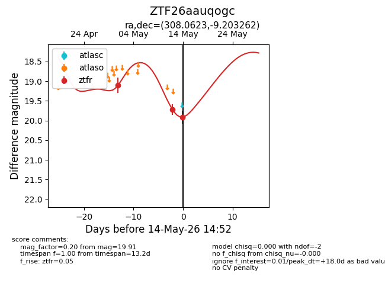
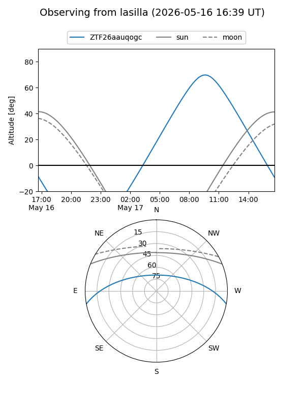
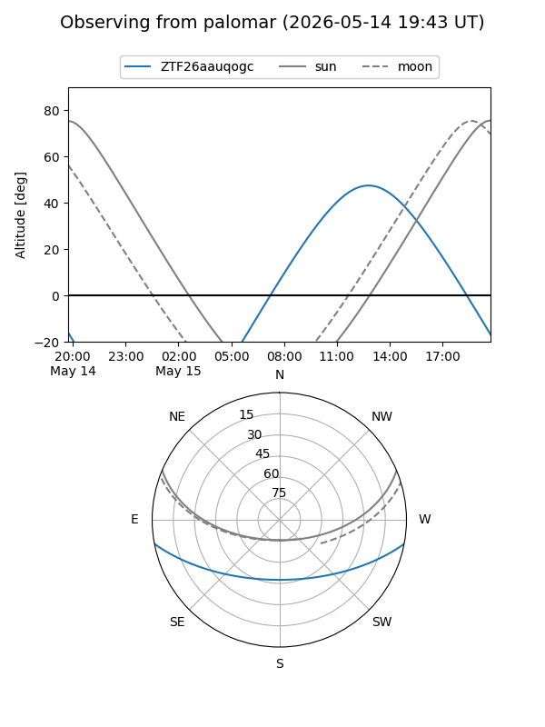
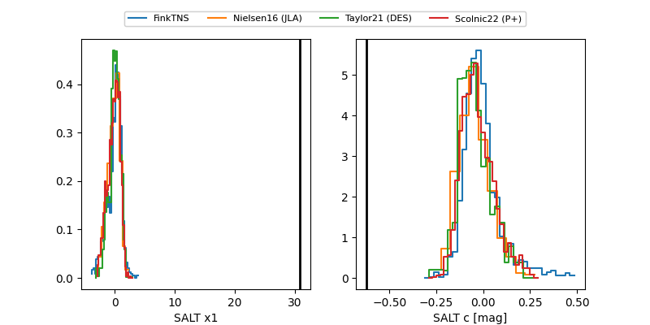

ZTF26aauqogc
Target ZTF26aauqogc at 2026-05-14 14:53
Aliases and brokers:
FINK: link
Lasair: link
ALeRCE: link
alt names
ZTF26aauqogc (ztf,fink_ztf)
Coordinates:
equatorial (ra, dec) = 308.0623,-9.20326
equatorial (HMS+DMS) = 20:32:14.95,-09:12:11.74
galactic (l, b) = (36.0930,-26.55319)
Flags:
Photometry:
last ztfr=19.91
3 ztfr detections
Lightcurve

Visibility


Additional plots
